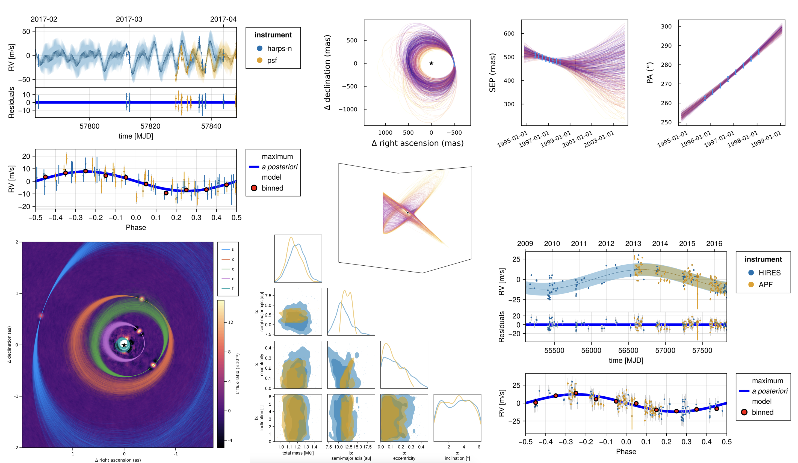

Octofitter


Octofitter is a Julia package for performing Bayesian inference against a wide variety of exoplanet / binary star data. You can also use Octofitter from Python using the Python guide.

Supported data:
- Fit exoplanet orbits to relative astrometry
- Fit radial velocity data (relative between a companion and host, and absolute)
- Model stellar activity with Gaussian processes
- Model stellar astrometric accerlation (Gaia-Hipparcos proper motion anomaly, Hipparcos IAD)
- "De-orbiting": combine a sequence of images with orbital motion to detect planets
- Sample directly from images or interferometric visibilities
- Experimental support for transit data based on Transits.jl
You can freely combine any of the above data types. Any and all combinations work together.
Modelling features:
- multiple planets (zero or more)
- hyperbolic orbits
- co-planar, and non-coplanar systems
- arbitrary priors and parameterizations
- optional O'Neil "observable based priors"
- link mass to photometry via atmosphere models
- hierarchical models (with a bit of work from the user)
Speed:
Fit astrometry on your laptop in seconds!
- Highly optimized code and derivatives are generated from your model
- Higher order sampler (No U-Turn sampler) which explores the parameter space very efficiently
- The sampler is automatically warmed up using a variational approximation from the Pathfinder algorithm (Pathfinder.jl)
Multi-body physics is not currently supported. A Pull-request to PlanetOrbits.jl implementing this functionality would be welcome.
See also: the python libraries Orbitize!, orvara, and exoplanet.
Read the paper
In addition to these documentation and tutorial pages, you can read the paper published in the Astronomical Journal (open-access).
Attribution
- If you use Octofitter in your work, please cite Thompson et al:
@article{Thompson_2023,
doi = {10.3847/1538-3881/acf5cc},
url = {https://dx.doi.org/10.3847/1538-3881/acf5cc},
year = {2023},
month = {sep},
publisher = {The American Astronomical Society},
volume = {166},
number = {4},
pages = {164},
author = {William Thompson and Jensen Lawrence and Dori Blakely and Christian Marois and Jason Wang and Mosé Giordano and Timothy Brandt and Doug Johnstone and Jean-Baptiste Ruffio and S. Mark Ammons and Katie A. Crotts and Clarissa R. Do Ó and Eileen C. Gonzales and Malena Rice},
title = {Octofitter: Fast, Flexible, and Accurate Orbit Modeling to Detect Exoplanets},
journal = {The Astronomical Journal},
}- If you use Gaia parallaxes in your work, please cite Gaia DR3 Gaia Collaboration et al. 2023
- Please cite the HMC sampler backend if you use
octofit: Xu et al 2020 - Please cite the Pigeons paper if you use
octofit_pigeons. - If you use Hipparcos-GAIA proper motion anomaly, please cite Brandt 2021
- If you use example data in one of the tutorials, please cite the sources listed
- If you use one of the included functions for automatically retreiving data from a public dataset, eg HARPS RVBank, please cite the source as appropriate (it will be displayed in the terminal)
- If you adopt the O'Neil et al. 2019 observable based priors, please cite O'Neil et al. 2019.
- If you use RV phase folded plot, please consider citing Makie.jl Danisch & Krumbiegel, (2021).
- If you use the pairplot/cornerplot functionality, please cite:
@misc{Thompson2023,
author = {William Thompson},
title = {{PairPlots.jl} Beautiful and flexible visualizations of high dimensional data},
year = {2023},
howpublished = {\url{https://sefffal.github.io/PairPlots.jl/dev}},
}Ready?
Ready to get started? Follow our installation guide and then follow our first tutorial.